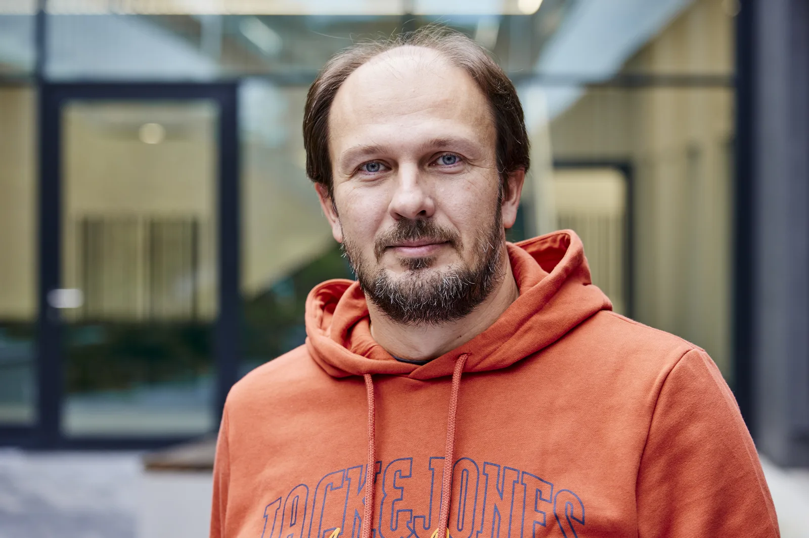

5–10×
Typical GPU speedup
What Jedox's own docs promise for the GPU Accelerator today. Best cases reach about 70×.
Freiburg, Germany
I'm a Senior Software Architect at Endress+Hauser. Most of my week goes into Netilion, our IIoT platform for process plants, and into figuring out where AI agents actually help engineers and support teams (and where they don't). I got here the long way: my bachelor thesis put OLAP queries on GPUs, and that work ended up shipping as a Jedox product.

5–10×
Typical GPU speedup
What Jedox's own docs promise for the GPU Accelerator today. Best cases reach about 70×.
3
GPU / OLAP papers and talks
ACM DOLAP and two NVIDIA GTC appearances.
1
Granted patent
US 11,644,827 B2, on measuring performance of field devices.
CPSA-F
iSAQB certified
Software architecture, Foundation Level, since .
15+ years of building software in Freiburg, first as a developer, then team lead, now architect. If you're hiring, these are the roles where I'd be useful from week one.
Platform and integration architecture, cloud-native services on AWS, and the boring-but-critical parts: security, reliability, observability.
Setting technical direction, running design and code reviews, mentoring developers, and helping management decide where the money should go.
Some job ads call it Agentic AI Architect. Either way: LLM apps, RAG, and agents for engineering and support work, plus rules for running them safely next to real equipment.
Case study
Finance people hate waiting for a planning view to recalculate. In 2008 I started trying to fix that with graphics cards. It took four years and a lot of help, and it went further than I expected.
Timeline
–
Bachelor prototype
A sparse cube layout and a CUDA aggregation pipeline. One 1,176-query view went from 30 s to 6.2 s, about 4.8× faster.
Shown in public
At CeBIT and NVIDIA GTC: single queries up to 18× faster, full views of 1,100+ queries over 4×.
–
Turned into a product
Built into the Jedox OLAP server in C/C++ and CUDA, with multi-GPU scaling on NVIDIA Tesla cards.
Today
Still documented
Current documentation lists typical 5–10× speedups, about 70× at best, and says results are workload-dependent.
Problem
OLAP planning means sparse multidimensional data, lots of consolidations, and rules on top. Every change triggers a recalculation, and on CPUs of that time a big view could take long enough that people stopped exploring.
Idea
My thesis, supervised in a DFG project between the University of Freiburg and Jedox, packed the cube into a sparse format the GPU could chew through. Palo needed 30 seconds for the test view; the prototype needed 6.2.
Engineering
From – I worked on it as a Jedox engineer: memory layout, massively parallel aggregation, multi-GPU support, and fitting it into the existing server. The Jedox GPU Accelerator documentation describes how it ended up: an OLAP server feature for NVIDIA Tesla GPUs, switched on per cube, that picks the CPU or GPU engine depending on the workload.
My Palo server fork and Palo deployment repo are open-source server and ops work. The accelerator itself is proprietary and isn't in there.
Result
The Jedox GPU Accelerator FAQ is the best public source for what it does today, including when a GPU won't help.
Later research on selected workloads reported up to 50× faster aggregation and over 150× faster writeback. That was research, not product guidance, so I keep the two apart.
The prototype, the research papers, the old commercial claims, and the current docs all measured different workloads on different hardware generations. There is no single speedup figure, and I'd be suspicious of anyone who quotes one.
I'm responsible for the architecture of Netilion, Endress+Hauser's IIoT platform, and its hybrid variant. That covers system and integration design and the non-functional side: security, reliability, observability, maintainability.
We build AI agents, LLM apps, and RAG systems for engineering, support, and internal knowledge. I also wrote much of our guidance on when generative and agentic AI is a good idea in an industrial setting, and when it isn't.
I run architecture, design, and code reviews, coach developers and other architects, and sit with management and product owners when technology or investment calls need an engineer in the room.
Go · CLI · since 2026
Getting into a running Kubernetes environment used to take a cloud login, fresh cluster credentials, the right kubeconfig context, and then a hunt for the right pod. netcli is a small Go CLI that does all of that in one step. It walks you through it interactively, or it runs from scripts.
A few design choices I like:
defer puts the old limits back, even if the session crashes.All in Freiburg. The full German CV has more detail.
Passed the iSAQB exam in Echterdingen in , after the Software Architecture Camp training in November 2021. Covers architecture fundamentals, building blocks and interfaces, architecture and quality goals, and tooling.
Issued by iSQI GmbH for the International Software Architecture Qualification Board. Certificate no. 2101-CPSAFL-201863-DE.
Since then I've been working through the iSAQB Advanced Level (CPSA-A) modules. Each one earns credit points in technology (T), methodology (M), and communication (K).
iSAQB AGENTA · 10 T · 20 M
Architecture when coding agents write a growing share of the code: how architects keep the structure and quality goals intact. Three days online, , with Stefan Toth and Niklas Trentmann (socreatory).
iSAQB WEBSEC · 20 T · 10 M
Designing web applications with security built in, rather than bolted on after the pen test. Three days online, , with Dimitrij Drus and Christoph Iserlohn (socreatory).
University of Freiburg, –. Focus on databases and information systems, minor in business administration. Thesis: parallelizing OLAP computations on graphics processors.
Georgian Technical University, Tbilisi, –. Product testing and certification for the pharmaceutical and food industries.
LinkedIn or XING is the easiest way to reach me. I'm happy to chat about architecture roles, industrial AI, or why your OLAP cube is slow.